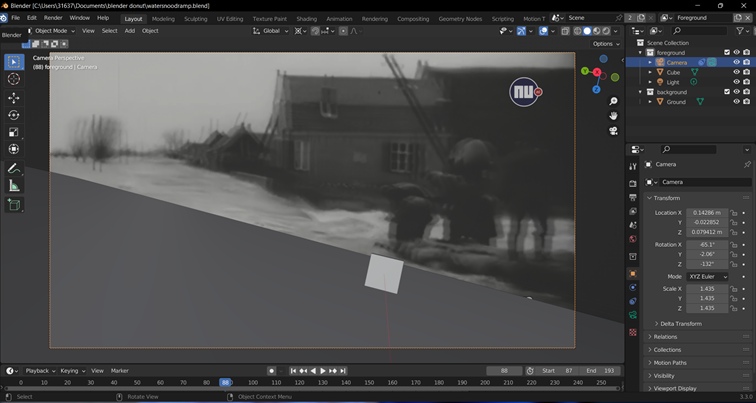

Watersnoodramp Motion tracking video
Ik had na mijn interview met Natasja over hoe volumetric het best tot zijn recht zou komen, de opdracht
gekregen om een actueel iemand in een belangrijke gebeurtenis in de geschiedenis te plaatsen. Ik heb hiervoor
een volumetric video van Siert de Vos gebruikt en deze via motion tracking in de omgeving geplaatst. Motion tracking
werkt door punten in de video aan te duiden die de gehele video zichtbaar zijn dan volgt blender dit punt en kan de camera
bewegingen berekenen en omzetten naar de 3D omgeving van Blender.
Zoals je kan zien komen het storyboard en het product niet overheen, dit komt doordat de originele beelden die ik wilde
gebruiken niet geschikt waren voor motion tracking omdat de beelden natuurlijk heel oud zien en niet scherp. Dit was het eerste
resultaat.

Zoals je kunt zien is de vloer niet op de juiste plek en heeft hij niet de juiste orientatie.
Hierna heb ik een video met minder beweging gekozen zodat ik met de motion tracking nog wel reference point kon
aanduiden. Ik heb de volumetric van Siert beter in de omgeving laten intergreren door hem zwart wit te maken en 'noise texture' toe te voegen.

Deze video mag niet op youtube gedeelt worden, omdat de volumetric van Siert de Vos vertrouwelijk is.
Daarom heb ik de video op google drive gezet
Ik heb niet meer voor de deadline de mist en regen kunnen toevoegen, in opdracht van Dutch Rose Media zal ik hier in de komende
weken nog verder aan gaan werken.